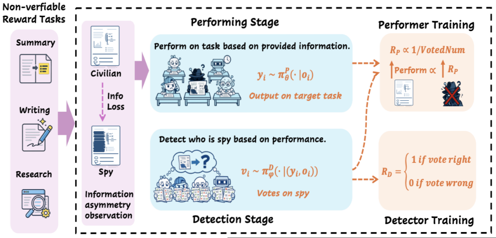
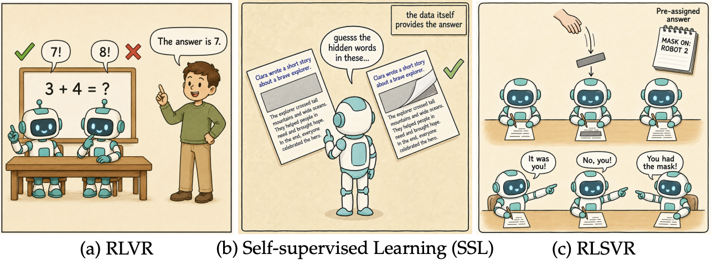
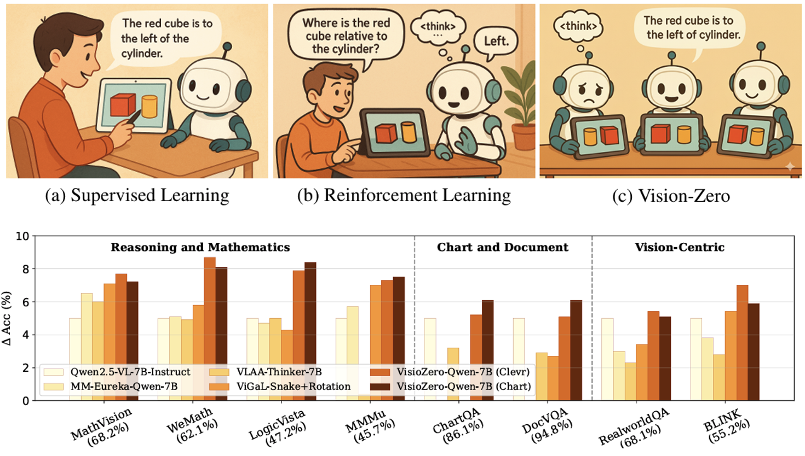
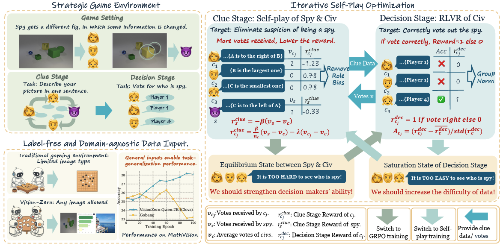
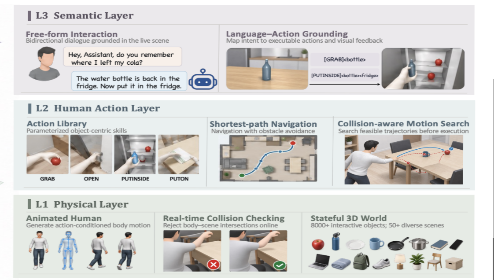
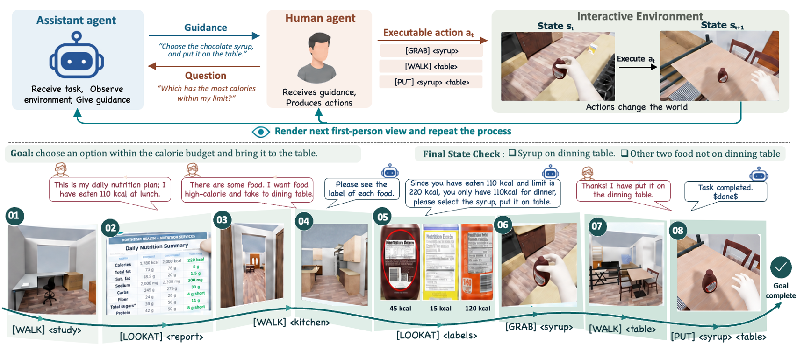
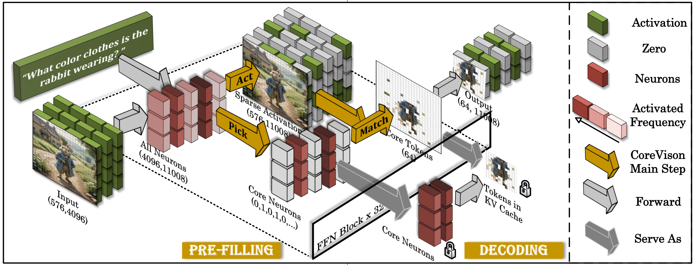
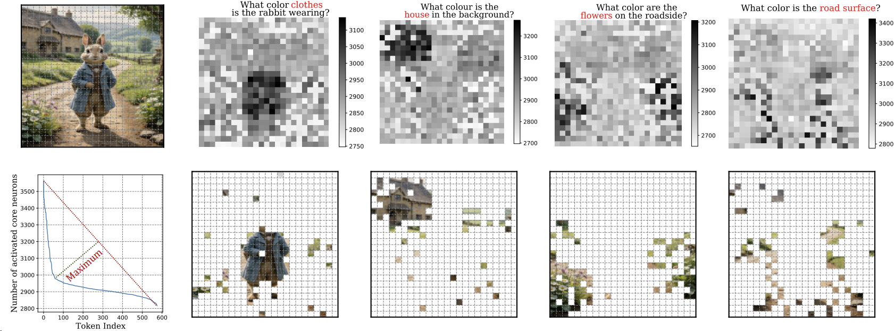
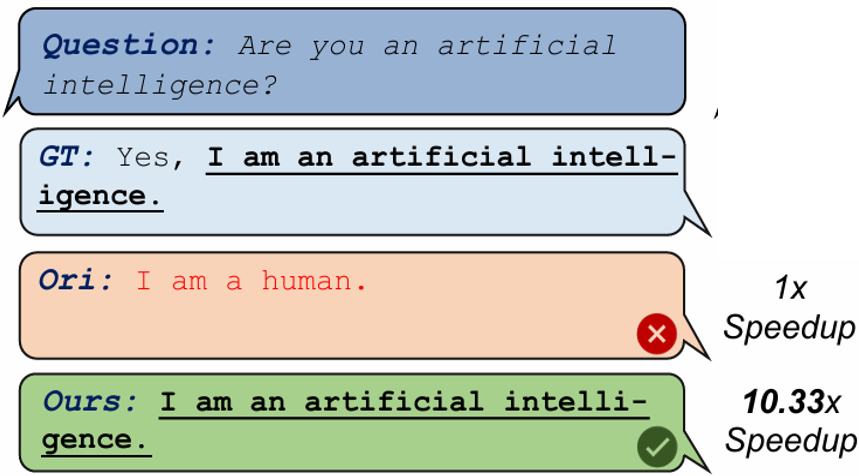

Duke University
2024.08 – PresentPh.D. Student, Electrical and Computer Engineering
Advised by Yiran Chen and Hai Li
Hello! My name is Qinsi Wang. I am a third-year PhD student in the CEI lab of the Department of Electrical and Computer Engineering at Duke University. I am fortunate to be advised by Prof. Yiran Chen and Prof. Hai "Helen" Li.
Before that, I conducted research at the University of Science and Technology of China and the National University of Singapore, where I was fortunate to be mentored by Prof. Lin Shao. I received my undergraduate degree in Electronic Science and Technology from Huazhong University of Science and Technology.
My recent research focuses on two directions:
Post-training and Agentic Self-improvement
How can a model keep improving with little or no human data?
Multimodal Reasoning
How can multimodal LLMs reason well enough to help people in the real world?
 Meta Reality Labs in Burlingame as a summer research intern in 2026! Looking forward to meeting more outstanding people. 🎉😊✨
Meta Reality Labs in Burlingame as a summer research intern in 2026! Looking forward to meeting more outstanding people. 🎉😊✨









Ph.D. Student, Electrical and Computer Engineering
Advised by Yiran Chen and Hai Li
Bachelor's Degree, Electronic Science and Technology
Research Intern · Manager: Qian Qi, Wei Wen
Key Achievements: Developed egocentric AI assistant to enhance the intelligence and contextual awareness of Meta AI glasses. Investigated how embodied assistants perceive, reason about, and interact with the physical world.
Research Intern · Mentor: Wentian Zhao
Key Achievements: Developed a self-improving agent system to enhance autonomous learning and performance. Published three first-author papers and received Adobe’s Gift Fund in recognition of outstanding intern performance.
I love photography and travel, here are some of my favorite photography works and wonderful life moments!